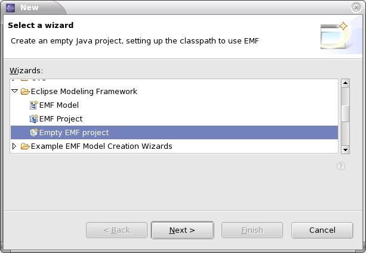
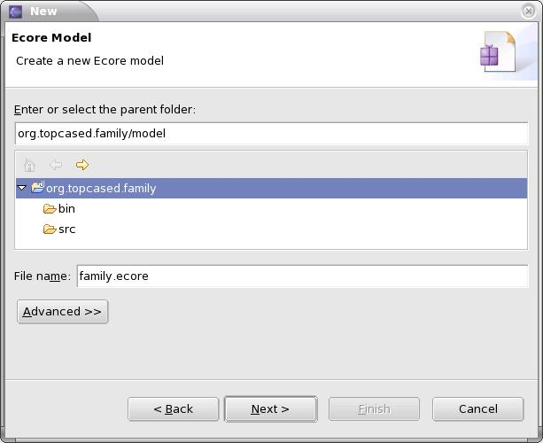
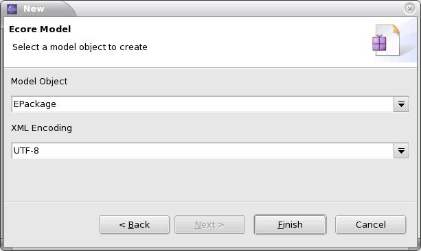
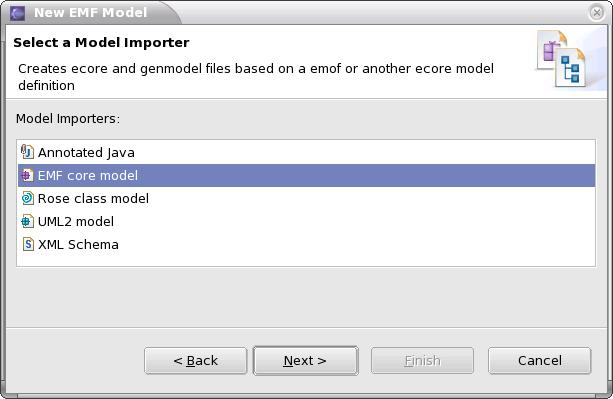
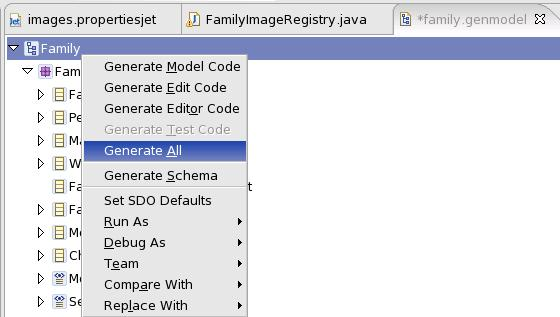
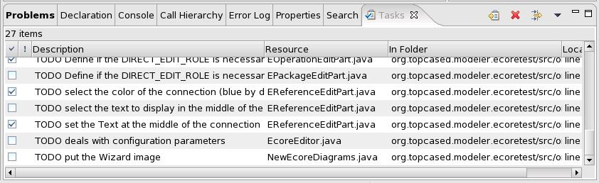

1. Creation of an Ecore Metamodel
1.1 Configuration and generation of the EMF tree structure editor
2. Creation of the configurator for the graphical editor
2.1 The Editor Configurator file
2.2 The Diagram Configurator file
3. Generation of the graphical editor and customizations
3.6 The diagram.graphconf file
Introduction :
The document is a user manual that explains the generation process : how from a starting metamodel, we can generate a graphical editor. The process takes a few steps :
- creation of the Ecore Metamodel (use the graphical Ecore editor or the EMF tree structure Ecore editor)
- generation of the EMF tree structure editor
- creation of the configurator files for the graphical editor with the EMF tree structure Configurators editor.
- generation of the graphical editor and its diagrams, and customization.
1. Creation of an Ecore Metamodel
Create an "Empty EMF project". Give a name like org.topcased.xxx where xxx is the name of the metamodel.
Then, you can create an Ecore model from the tree structure EMF tree structure Ecore editor : select "New > Other...", and "Example EMF Model Creation Wizards > Ecore Model". Create a new folder (model) that will contain the newly created Ecore model.
Select "EPackage" as the root model object to create.
Then you can make your model, create EClasses, EReferences, EAttributes, ...
Remark 1 : you have other ways to get your Ecore metamodel. You can use the graphical Ecore Editor of Topcased or import it from a Rose class model.
- Name : "xxx"
- NsPrefix : "xxx"
- NsURI : enter something like "http://www.topcased.org/1.0/xxx" so that you get a unique URI for a given metamodel of a given version.
1.1 Configuration and generation of the EMF tree structure editor
The first step is to create the xxx.genmodel file that will configure what will be generated at the creation of the tree structure editor.
Remark : if you have chosen to create your Ecore metamodel from a Rose class model, the xxx.genmodel file is automatically created, you have just to customize it.
Select "New > Other...", and "Eclipse Modeling Framework > EMF Model". Create the file xxx.genmodel in the same folder as the xxx.ecore file. Then select "EMF core model" as the Model Importer and reference the xxx.ecore file as the model file in the next page wizard.
- Configuration of the GenModel (root element) :
- You can leave the default options (the generation will generate two more plugins : a plugin "edit" and a plugin "editor") or modify some properties to generate all classes in only one plugin. If you want to avoid generating two more plugins, delete the "edit" and "editor" occurrences among the properties ("Edit directory" and "Editor directory").
- Configuration of a GenPackage :
- Base Package : value = "org.topcased"
- Configuration of a GenClass :
- Label Feature : select the attribute that will be displayed as the label. This feature will be used to show the label that best represent the model object. In general, select the "name" attribute. The type of the feature should be a String
- Configuration of a GenFeature :
- Property Type :
- Editable : the value is modifiable by the user
- ReadOnly : the value is available in read only
- None : the value won't be displayed in the Properties View
- PropertyCategory : affect the property to a category. Each property of a model object is contained by a category. If none is defined, a default category "Misc" is created.
- Property Description : describe the property. The text will be displayed at the bottom of the Eclipse environment in a status bar.
- Property Filter Flags : it is used to filter some properties. Thus, we can provide two views : a "Simple" view (the value is left empty) and an "Advanced" one (the value is set to "org.eclipse.ui.views.properties.expert"). The user can activate the "Advanced" view (by clicking on the icon "Show Advanced Properties").
- Property Type :
To generate the tree structure editor, open the xxx.genmodel file and right click on the GenModel element and select "Generate All".
2. Creation of the configurators for the graphical editor
Once you have generated the tree structure editor, let us configure a more convivial editor : a graphical editor.
The first step is to create the necessary configurator files. The configurator files describe what the editor will look like, which diagrams will be available and what will be displayed in each diagram. The configuration of a graphical editor consists in describing several configuration files :
- an editor configuration file that will describe the editor plugin
- a diagram configuration file for each diagram
2.1 The Editor Configurator file
Select "New > Others...", and then "Topcased > Topcased Configurators > Editorconfigurator Model".
 The root model object must be "Editor Configuration". When you have finished the wizard, the editor is opened. The configurator model only contains the root element "Editor
Configuration". The editor configurator file is quite simple. It contains only one model object, an EditorConfiguration with a few properties. You can define here common
properties of the generated editor plugin :
The root model object must be "Editor Configuration". When you have finished the wizard, the editor is opened. The configurator model only contains the root element "Editor
Configuration". The editor configurator file is quite simple. It contains only one model object, an EditorConfiguration with a few properties. You can define here common
properties of the generated editor plugin :
- EditorConfiguration
- name : EString. The name that will be used for display : "SAM Editor"
- projectName : EString. The project name that will be created : "org.topcased.modeler.sam"
- genModel : GenModel. A reference to the GenModel file associated with the metamodel
- pluginVersion : EString. The version of the generated plugin : by default it takes the same version of the EditorConfiguratorPlugin
- forceOverwrite : EBoolean (since 0.9.0). Specify whether the non java files that are generated (plugin.xml, MANIFEST.MF, ...) should be overwritten or not
- organizeImports : EBoolean (since 0.9.0). Specify whether at the end of the generation process, an "Organize Imports" should be automatically done on the generated classes.
2.2 The Diagram Configurator file
Select "New > Others...", and then "Topcased > Topcased Configurators > Diagramconfigurator Model".
The root model object must be "Diagram Configuration". When you have finished the wizard, the editor is opened. The configurator model only contains the root element
"Diagram Configuration".
Then, you will have to specify the metamodel file you will work with. Indeed, the objects we will create will depends on the model objects of the metamodel we have created. When your new empty configurator file is open, you can do this by right clicking on the editing window and selecting "Load Resource..." : then you have to select to corresponding xxx.genmodel file.
The diagram configurator file is more complete. Indeed, it is used to configure all graphical objects used in the diagram, the associated model objects and the Palette of the diagram. We advise you to edit the different part of the configurator in the following order :
2.2.1 Diagram Configuration
This is the root model object of your diagram configurator. You can define here common properties of the generated diagram plugin and furthermore, you will reference here the loaded Genmodel file.
- DiagramConfiguration
- id : EString. The diagram ID property will define the name of the plugin that will be generated. If you change it to be the same as the projectName of the editor configuration, then all the files will be generated in this plugin. However, the common non java files that will be generated will not be merged. You will have to complete them by hand. This String should not contain any space : "org.topcased.modeler.uml.sequencediagram".
- editorId : EString (since 0.9.0). Reference the editor Id generated for the editor. Generally the id has the following syntax : [projectName].editor.[Prefix]Editor where "projectName" is the property defined in the editor configuration and "Prefix" is the property defined in the GenModel. You can easily retrieve this Id in the plugin.xml file generated by the editor configuration.
- genModel : GenModel. Reference the genModel file associated with the metamodel.
- name : EString. The diagram name : "Sequence Diagram".
- package : EString. The java package name that will contains generated classes relatives to this diagram : "systdiagram".
- prefix : EString. A prefix used in the generated common classes of the diagram : "Syst".
- layout : LayoutType. Define the type of Layout used todisplay the children elements.
- defaultBackgroundColor : Color. Specify the default background color.
- defaultForegroundColor : Color. Specify the default foreground color.
- defaultFont : Font. Specify the default font.
- palette > PaletteConfiguration. Define the palette that will be associated with the diagram.
- * parts > PartConfiguration. Contains all the partConfiguration that should be available in the diagram.
- * objects > ObjectConfiguration. Contains all the objectConfiguration that should be referenced by the PartConfiguration of the diagram.
- Template Root Object : EObject (since 0.9.0). Describe the model object that should be root model object when a new Diagram is created. This is the model object that you choose when you create a new model with the EMF generated editor. This object will be used to create the template files.
- Force Overwrite : EBoolean (since 0.9.0). Specify whether the non java files that are generated (plugin.xml, MANIFEST.MF, ...) should be overwritten or not.
- Organize Imports : EBoolean (since 0.9.0). Specify whether at the end of the generation process, an organize imports should be automatically done on the generated classes.
- Overwrite Graph Conf : EBoolean (since 0.9.0). Specify whether the diagram.graphconf file that is generated should be overwritten or not.
2.2.2 ObjectConfiguration, ModelObjectConfiguration and SimpleObjectConfiguration
There are two types of ObjectConfiguration. This element will describe the model representation defined at the DiagramConfiguration level.
A ModelObjectConfiguration will be linked with a model object (that will be referenced by its GenClass). You will be able to specify one or several DiagramConfiguration that can be associated with this model object through a DiagramReference.
A SimpleObjectConfiguration will not be linked with any model object. It will be then referenced by a PartConfiguration to represent only a graphical element.
- ModelObjectConfiguration
- genClass : GenClass. Reference to the GenClass of the model object.
- * diagrams > DiagramReference. Specify if the current diagram may be created into this ModelObjectConfiguration.
- SimpleObjectConfiguration (an ObjectConfiguration that is not associated with a model object)
- name : String. An identifier for the objectConfiguration that will be used to generate the EditPart and the Figure.
2.2.3 DiagramReference
The DiagramReference is used to indicate that a diagram will be associated with the model object referenced by the container ModelObjectConfiguration. Then you will be able to create new diagrams from this object. A same diagram may be associated with several ModelObjectConfiguration, and each diagram must be associated with at least one ModelObjectConfiguration.
- DiagramReference
- diagram : DiagramConfiguration. The corresponding diagramConfiguration.
- lowerBound : EInt. Minimal diagrams number that can be created [0 by default].
- upperBound : EInt. Maximal diagrams number that can be created [-1 by default].
2.2.4 PartConfiguration, NodePartConfiguration and EdgePartConfiguration
There are two types of PartConfiguration. This element will describe the graphical representation of an ObjectConfiguration defined at the DiagramConfiguration level.
The NodePartConfiguration is used to describe an object that will be represented as a Node in the diagram. You will have to specify its graphical properties and also its behavior in the editor (whether it is resizable, whether it will contains other Nodes, how it will arrange them, ...)
The EdgePartConfiguration is used to describe an object that will be represented as an Edge in the diagram. It will be used to connect two Nodes.
- PartConfiguration
- object: ObjectConfiguration (the model object configuration).
- defaultForegroundColor : EString. Specify the default foreground color.
- foregroundColorChangeable : EBoolean. Sspecify if the foreground Color of the figure is changeable.
- fontChangeable : EBoolean. Specify if the font of the text is changeable.
- prefix : EString (since 0.10.0). The prefix that should be used in the generation process. By default, if the ObjectConfiguration is associated with a model object, the prefix is set as the name of the GenClass, otherwise it is initialized with the name given to the SimpleObjectConfiguration. This property has been added at the same time of the Constraint, because Constraints allow to associate several graphical objects with a single model object.
- * constraint > Constraint (since 0.10.0). Specify the constraints that the model object should check to be valid.
- NodePartConfiguration > PartConfiguration
- type : EString. Specify a Figure that will be extended.
- * childElements : NodePartConfiguration. Indicates which nodes may be contained by this node.
- superType : NodePartConfiguration. Specify if the EditPart extends another EditPart.
- defaultWidth : EInt. Set the default width of the Node (-1 if automatic size).
- defaultHeight : EInt. Set the default height of the Node (-1 if automatic size).
- minimumWidth : EInt. Set the minimum width of the Node (-1 if automatic size).
- minimumHeight : EInt. Set the minimum height of the Node (-1 if automatic size).
- maximumWidth : EInt. Set the maximum width of the Node (-1 if automatic size and 0 if infinite).
- maximumHeight : EInt. Set the maximum height of the Node (-1 if automatic size and 0 if infinite).
- defaultBackgroundColor : EString. Specify the default background color.
- backgroundColorChangeable : EBoolean. Specify if the background Color of the figure is changeable.
- resizing : ResizableType. Specify the type of policy that is applicable for this element.
- container : EBoolean. Specify if the node should act as a container (if it should contain other nodes).
- layout : LayoutType. Specify the type layout for displaying child nodes.
- directEditable : EBoolean. Specify if the node has a Label that is DirectEditable.
- EdgePartConfiguration > PartConfiguration
- * sourceTargetCouple > SourceTargetCouple. Define which Nodes can be connected and how.
- * edgeObjects > EdgeObject. Define the different objects (Label for the moment) that are attached to the connection.
- sourceDecoration : DecorationType. Specify the type of decoration that should appear at the source of the connection.
- targetDecoration : DecorationType. Specify the type of decoration that should appear at the target of the connection.
- defaultRouter : RouterType. Specify the type of Router that should be used for this type of connection.
- directEditable : EdgeObject. Specify which EdgeObject is DirectEditable.
Remark : for each NodePartConfiguration, you must specify the figure that will represent the graphical object. You can define your own figures and reference them trough an extension by using the extension point (figureDeclaration) defined in the configurator.
2.2.5 PaletteConfiguration, PaletteCategory and PaletteItem
The PaletteConfiguration is used to configure the tools that will be available in a given diagram. It is composed of several PaletteCategory objects.
The PaletteCategory is used to arrange the different tools associated with PartConfigurations of the Editor. It contains PaletteItem objects.
The PaletteItem links a tool with a PartConfiguration. This is the object that will be created from this ToolType.
- PaletteConfiguration
- name : EString. The name of Palette.
- * paletteCategories > PaletteCategory. The different categories of the palette.
- PaletteCategory
- name : EString. The name of the category that will be displayed in the editor : "Objects".
- * items > PaletteItem. The items that will be associated with this category.
- PaletteItem
- name : EString. The name of the Palette item that will be displayed in the editor.
- part : PartConfiguration. The part that will be created from this item. The type of the tool is determined by the type of the partConfiguration (NodePartConfiguration or EdgePartConfiguration).
2.2.6 SourceTargetCouple
This defines the source and target couples for each connection that can be created. At this point, you will define the different possible ways to create an Edge between two Nodes. You will then define where the model object will be stored in the model and the different references between the source Node, the target Node and the Edge. To add a "source target couple" to your edge part, right click on the part and choose, "New Child > Source target couple".
- SourceTargetCouple > PartConfiguration
- autoRef : EBoolean. If the source and the target can be the same.
- reversible : EBoolean. If the connection can be inversed (target as a source and source as a target).
- sourceNode : NodePartConfiguration. The node that can be the source.
- targetNode : NodePartConfiguration. The node that can be the target.
- containerType : EdgeContainerType. Define where the connection will be stored.
- containerObject : GenClass. The object that will contain the connection.
- containerRef : EStructuralFeature. The feature that will contain the connection.
- refEdgeToSource : EStructuralFeature. Specify the EStructuralFeature of the Edge that reference the source Node.
- refEdgeToTarget : EStructuralFeature. Specify the EStructuralFeature of the Edge that reference the target Node.
- refSourceToEdge : EStructuralFeature. Specify the EStructuralFeature of the source Node that reference the Edge.
- refSourceToTarget : EStructuralFeature. Specify the EStructuralFeature of the source Node that reference the target Node.
- refTargetToEdge : EStructuralFeature. Specify the EStructuralFeature of the target Node that reference the Edge.
- refTargetToSource : EStructuralFeature. Specify the EStructuralFeature of the target Node that reference the source Node.
To illustrate this section, we will configure the Implementation Edge of the UML2.0 metamodel (An Implementation is a specialized Realization relationship between a Classifier and an Interface) :
- Auto Ref : a boolean value is required here to indicate if the the same object can be the source and the target of the edge. In this case, it is not an auto-reference. Example : In our example, choose false.
- Reversible : a boolean value is required here to indicate if the source can be the target and the target can be the source. Example : In our example, choose false.
- SourceNode : select the node that can be a source for this edge. Example : In our example, the implementation edge has a source of Class type. So, choose the node that represent a Class.
- TargetNode : select the node that can be a target for this edge. Example : In our example, the implementation edge has a target of Interface type. So, choose the node that represent an Interface.
- Container Type : Define where the edge model object is stored
Available values :
- NONE : the edge has no model object associated (case of the Inheritance link)
- DIAGRAM : the edge is stored in the model object represented by the current diagram.
- SOURCE_CONTAINER : the edge is stored in the model object that stores the source model object
- TARGET_CONTAINER : the edge is stored in the model object that stores the target model object
- SOURCE : the edge is stored in the source model object
- TARGET : the edge is stored in the target model object
- Container Object : After choosing the container type, if you have chosen a container (different of NONE), you will have to indicate to the configurator the kind of model object the container is. This will help to filter the valid features that could handle the edge. Example : In our example, the implementation edge is stored in the source model object. So, you have to choose the object "Classifier".
- Container Ref : This is the feature of the selected container object that will store the edge. Example : Previously, you have chosen the "Classifier" object : so the list shows only the features that are valid. So you have to choose the feature "implementation".
- refEdgeToSource, refEdgeToTarget, refSourceToEdge, refSourceToTarget, refTargetToEdge and refTargetToSource : Here you can specify for each model object implied in the edge creation, which feature are used to reference other objects. This will be used at the creation of the model object when all references will be updated. Example : In our example, the feature that will reference the target object, is on the implementation edge itself. It's the "contract" feature. You will have then to fill the refEdgeToTarget attribute.
Remark : Repeat all those steps for each "source target" couples.
2.2.7 EdgeObject
The EdgeObject is used to define which are the different Labels that will be associated with an Edge. In the case of an Association in UML2, we will be able to define two Labels at the source (one for the Cardinality of the Association and the other for the name of the reference), two others at the end of the Edge and eventually one at the middle of the Association that will display the name of the current Association. This is a particular example where multiple labels are defined.
But in most case, a simple Label will be sufficient. You will be able to define where the Label should be attached (with the type attribute), and select the eStructuralFeature that will be associated with the Label (the feature should be of type EString to be well displayed). If the feature is not a direct attribute of the Edge, you will have the possibility to define the id to use : this will be then used at the generation process to create a method used to retrieve the EdgeObject. In this case, it is better to set the id as the name of the feature that will be retrieved during the customization step.
- EdgeObject
- type : EdgeObjectType. Define where the EdgeObject should be attached.
- eStructuralFeature : EStructuralFeature. Define the feature of the Edge model object that should be displayed.
- id : EString. A required feature, that will be used to generate methods used to retrieve the label that should be displayed. If the eStructuralFeature is defined, the id value will automatically be filled with the name of the eStructuralFeature.
2.2.8 Constraint (since 0.10.0)
A Constraint is used to specify a constraint or a set of constraints that should be matched by a PartConfiguration to be valid, and more precisely by the model object associated with the ModelObjectConfiguration. Indeed a given model object may represent two different notions depending on its properties. The constraints are then used to check these properties at the runtime and specify which PartConfiguration should be used. At the moment, there is only one type of language which is supported : "ocl". You can easily add new languages through an extension using the extension point (evaluators) defined in the "org.topcased.modeler" plugin.
- Constraint
- language : EString. Define the language in which the rule is expressed.
- rule : EString. The rule that will be evaluated at the runtime to check the corresponding EditPart.
2.2.9 Configurator Annotations (since 0.10.0)
Annotations are generally used to insert additional informations that will be embedded in the configurator model and that will be used during the generation process. An Annotation is composed of one or several detail entries.
- EAnnotation
- source : EString. For the moment, only one type of Annotation has been defined : "codeCustom". It will define a java customization that will be directly inserted in the generated code.
- Detail Entry
- key : EString. Define the type of customization. It will then be used in the templates to determine at which place the code should be inserted. For the moment, only one value is managed : "initModelObject". It corresponds to an Annotation associated with a PaletteItem, and the java code associated will be generated at a special place in the generated code.
- value : EString. A java code snippet that must be in accordance with the key.
Remark : When a new type of code customization is interesting to manage directly in the configurator model, the template(s) associated should be modified to manage it.
3. Generation of the graphical editor and customizations
When you have finished to configure your editor, you can right click on your configurator file and select the corresponding action : "Topcased > Generation > Editor" or "Topcased > Generation > Diagram". It will generate a plugin according to the properties you defined in the configurator file.
Once the graphical editor plugin generated, you should be able to run it. However, the editor should be customized to get a more convivial one.
Remark : if you modify an attribute or a method that contains a '@generated' tag in a generated class, be sure to place 'NOT' after it to prevent it from being overwritten. Note that it is preferable to create '@generated NOT' tags, rather than removing the '@generated' tag completely.
The folder called "icons" contains the icons that are used by the editor. These icons are retrieved by an ImageRegistry class : it gets the Image location from the identifier that is present in the file images.properties that have been generated. After the generation none icon is generated but you can add yours. Just take a look at the file image.properties to give the corresponding name to your icons, or rename the file access in the file. Icons used in the palette should be sized to 16x16 to be well displayed.
The generated editor provides an extension point to define templates. The template files are constrained :
- One template for each type of diagram is required. It is used for example when the user create a new diagrams model from an existing model.
- The parameters of the extension point :
- id : it is the same field as "presentation" in the editor configuration
- type : the same field as "prefix" in the editor configuration. It is used to make a filter on the Templates that must be displayed in the wizard comboBox.
- name : the string displayed in the wizard comboBox
- model : the model file
- diagrams :the diagrams model file
- They must be called %name%.xxx and %name%.xxxdi, because this variable is then used by the wizard to name the diagram of the models you will create after.
Remarks :
- Since the 0.9.0 version of Topcased, a first simple template is generated : it is composed of a single root model object that will be associated with a given diagram.
- As the templates were not generated in the 0.8.0 and older version of Topcased, you had to create them yourself. Fortunately, there is an easy way to do that :
- Create a new model file with the EMF tree structure editor and call it "%name%".
- Then select the corresponding root object in the EMF wizard and click on finish.
- The tree structure editor is then open. You can save your model and close the editor. This model will be used as the template of the model file. So you have to copy it in the directory "templates/template1/%name%.xxx" of your generated Topcased plugin (you have to create the directory "template1" that was not generated).
- Then you will have to create the template for the diagram file. So create a new diagram file from an existing model file. There you will have to reference the file %name%.my as the existing model file, select the root object that will be associated with the diagram and click on finish. Now the file "%name%.xxxdi" should be created. Copy it in the directory "templates/template1/%name%.xxxdi" and then, you should be able to create new models from the template associated with the diagram.
- At least one template is associated for each diagram. The first diagram will retrieve its templates in the directory "templates/template1/" of the generated plugin. The second diagram will then retrieve its templates from the directory "templates/template2/", ... You can have a look at the plugin.xml file to retrieve the different templates associated with the different Diagrams of the model.
The EditParts are the controller objects of the editor. They are used to link the model object with its graphical representation. There is mainly one method to customize : the createEditPolicies() method. This is the method that configure the behavior of the graphical node or edge. Lots of information is generated but you can add new behaviors.
The "Figures" manage the graphical aspect, that is how an object of the model should be displayed.
- You can define some figures that you will later reference during the "Editor Configuration step" : the generated figures will inherit from these basic figures.
- You can also customize directly the generated Figure. Generally, the paintFigure() and the paintBorder() methods may be overridden to define the desired shape of the Figure.
When the editor is generated, there are some code that must be customized or that will certainly be customized. So in the generated code, we introduce some TODO tags so that the developer that will have to customize the code can accede faster to the code that need some customization. There is a dedicated view in Eclipse (The Task view) that references all the TODO tags present in the java files.
So, in the most cases, you will have to open the Tasks view to see the TODO tags that will help you to find where some code should be handle coded.
3.6 The diagram.graphconf file (since 0.9.0)
This file contains the graphical informations (colors, size,...) used to display graphical elements in a given diagram. Previously, these informations were generated in the java classes, but these informations were often duplicated in many classes to be always accessible. Now, these informations are stored in a unique place and are accessed in a unique way.
The file is generated from the informations present in the diagram configuration file. It is not recommended to modify this file : the better way would consist in updating the diagram.configuration file and regenerating the diagram plugin (with the option "overwriteGraphConf" set to true).
By Jacques LESCOT, Anyware Technologies
Updated June, 26 2006